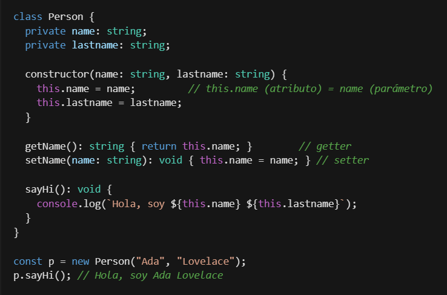
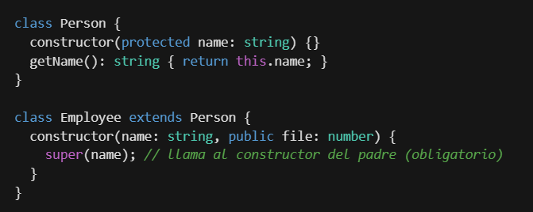
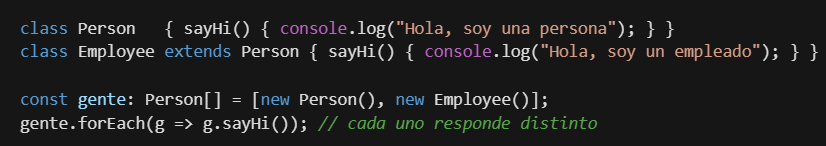

"La esencia del modelado es la abstracción." — Grady Booch
Cómo pensamos y organizamos el código.
Cómo lo dibujamos y comunicamos antes de escribirlo.
Es un paradigma: una forma de resolver problemas estableciendo un paralelismo con la realidad. En vez de instrucciones sueltas, agrupamos datos y comportamiento en clases.
Escribo una vez, uso muchas.
El código se parece al problema.
Un cambio queda contenido en un lugar.
La plantilla. Define qué características tiene un tipo de objeto, sin valores. Ej: la clase Puerta.
El tipo de dato que define esa clase.
Un espacio real en memoria (RAM) con valores concretos. Ej: esta puerta de madera, marrón, de 2m.
Con una clase puedo crear tantos objetos como necesite. Cada uno ocupa su propio lugar en memoria.
Se crea con la palabra reservada new:
const miPuerta: Puerta = new Puerta();new. Inicializa el objeto y no declara tipo de retorno.Atributos + métodos = miembros de la clase.
this es la autorreferencia: "el atributo de esta instancia", para distinguirlo de un parámetro homónimo.
Person
TypeScript ofrece un atajo para inicializar atributos desde el constructor: parameter properties.
class Person { constructor( private name: string, private lastname: string ) {} }
Lo vemos en profundidad más adelante.
Ocultar el cómo. Getters / setters.
Modelar lo esencial, ignorar el detalle.
Reutilizar. Relación "es un".
Mismo llamado, distinto comportamiento.
Ocultar el cómo y exponer solo el qué. La clase es una "caja hermética": sus miembros no se tocan desde afuera salvo que lo permitamos.
Convención: todo atributo privado, accedido por getters (leer) y setters (escribir).
Puedo cambiar la implementación interna sin romper a quien me usa.
Quedarme con lo esencial del problema e ignorar el resto. Elijo qué atributos y comportamientos importan en mi contexto.
…para un banco ≠ modelarla para un hospital. El contexto decide.
La POO nos da clases abstractas e interfaces para abstraer.
La abstracción es decidir qué dejar afuera. "La esencia del modelado es la abstracción." — Booch

Un Employee es una Person → reutiliza sus miembros públicos y protegidos.
extendscrea la relación.superreferencia al padre (constructor o métodos).Objetos distintos responden diferente al mismo método (misma firma). Surge de tres mecanismos:

UML (Unified Modeling Language) nos deja diseñar y comunicar antes de programar. Es como el plano del arquitecto. Nosotros nos concentramos en el diagrama de clases: clases, sus atributos y métodos, y las relaciones entre ellas.
Regla de oro: el UML debe ayudar a entender, no a decorar. Si un diagrama confunde, sobra.
En TypeScript, "sin modificador" es public por defecto (distinto de Java).
classDiagram
class Person {
-name: string
-lastname: string
+getName() string
+setName(name: string) void
+sayHi() void
}
Cada línea del diagrama es una línea de la clase: los - son atributos privados, los + son métodos públicos.
Las clases se relacionan. Cada flecha tiene un significado distinto — las recorremos una por una.
classDiagram
Person <|-- Employee
Person <|-- ProviderEmployee
class Person { #name: string }
class Employee { +file: number }
class ProviderEmployee { +companyCode }
class Employee extends Person {}
extends.classDiagram
class Turnable {
<<interface>>
+turnOn() boolean
+turnOff() boolean
}
Turnable <|.. Engine
Turnable <|.. AirConditioner
class Engine implements Turnable {}
<<interface>>; en código, implements (puede ser varias).classDiagram
Profesor --> Curso : dictaLa relación más genérica: un objeto conoce a otro y colabora, pero cada uno tiene vida propia. Cuando dudes, "asociación" es el default.
El todo puede existir sin la parte.
Auto ◇— AireAcond.
El todo no existe sin la parte.
Auto ◆— Motor.
classDiagram
Vehicle o-- AirConditioner : débil
Vehicle *-- Engine : fuertePregunta: "si destruyo el todo, ¿la parte sigue teniendo vida propia?"
// composición: el todo CREA la parte habitaciones = [new Habitacion()]; // agregación: la RECIBE de afuera constructor(private jugadores: Jugador[]) {}
classDiagram
PersonManager ..> Employee : parámetroclass PersonManager { getName(employee: Employee): string { return employee.getName(); } }
Cuántos de cada lado — se anota en los extremos:
flowchart TD
B{"¿A es un B?"} -- Sí --> H["HERENCIA --|>"]
B -- No --> C{"¿B es un contrato (interfaz)?"}
C -- Sí --> R["REALIZACIÓN ..|>"]
C -- No --> D{"¿A guarda a B como atributo?"}
D -- No --> E["DEPENDENCIA ..>"]
D -- Sí --> F{"¿Es todo–parte?"}
F -- No --> G["ASOCIACIÓN -->"]
F -- Sí --> I{"¿La parte muere con el todo?"}
I -- No --> J["AGREGACIÓN o--"]
I -- Sí --> K["COMPOSICIÓN *--"]class Nombre {}- atributoprivate# atributoprotected+ metodo()publicextendsimplementsDibujar el UML primero y después traducir: estrategia buenísima para no perderse.
abstract class Vehicle { constructor(protected engine: Engine) {} honk(): void { log("¡Tu-tuuuu!"); } // concreto abstract turnEngineOn(): boolean; // abstracto } class Car extends Vehicle { turnEngineOn(): boolean { // OBLIGATORIO return this.engine.turnOn(); } }
interface Turnable { turnOn(): boolean; turnOff(): boolean; } class Engine implements Turnable { turnOn(): boolean { log("Encendiendo el motor"); return true; } turnOff(): boolean { log("Apagando el motor"); return true; } }
Primero intentalo solo/a; después lo resolvemos juntos.
classDiagram
class Prestable {
<<interface>>
+prestar() void
+devolver() void
}
class Material {
#titulo: string
#codigo: string
#prestado: boolean
}
Prestable <|.. Material
Material <|-- Libro
Material <|-- Revista
Socio "1" o-- "*" Material
Material "*" --> "1" AutorPrestableinterfaz — contrato "se puede prestar".Materialabstracta — común, no se instancia sola.Libro/Rev.concretas (herencia).→ Autorasociación (* — 1).Socio ◇agregación — el material existe sin el socio.Material es abstracta (no interfaz) porque tiene estado y código común.Clase vs. objeto vs. instancia y los 4 pilares.
La caja, la visibilidad y las 5 relaciones.
Herencia · realización · asociación · agregación · composición.
Clase abstracta vs. interfaz y cuándo usar cada una.
Multiplicidad: 1 · 0..1 · * (muchos) · 1..* (uno o más)
Una Playlist contiene muchas Canciones; cada canción tiene un Artista. La playlist no tiene sentido sin sus canciones. ¿composición o agregación?
Circulo, Rectangulo, Triangulo son Figuras; cada una calcula su area() distinto. ¿abstracta o interfaz?
Una Tienda procesa TarjetaCredito, Efectivo, Transferencia; todos se pueden pagar(). Programá contra interfaces.
Un Equipo tiene un DT y entre 11 y 25 Jugadores (todos personas). Multiplicidades y herencia desde Persona.
→ Traé los 4 diagramas para revisarlos al inicio de la próxima clase.
Escribí el código y respondé en 3-4 líneas cada consigna:
Comparable con un método compareTo(other): number y hacé que una clase Producto la implemente comparando por precio.Animal con un método concreto dormir() y uno abstracto hacerSonido(). Creá Perro y Gato que la extiendan.new Animal() ni new Comparable()?Producto sea además "serializable a JSON", ¿me conviene otra interfaz u otra clase abstracta? ¿por qué?Estos ejercicios preparan el terreno para SOLID, que se apoya fuerte en interfaces y abstracción.